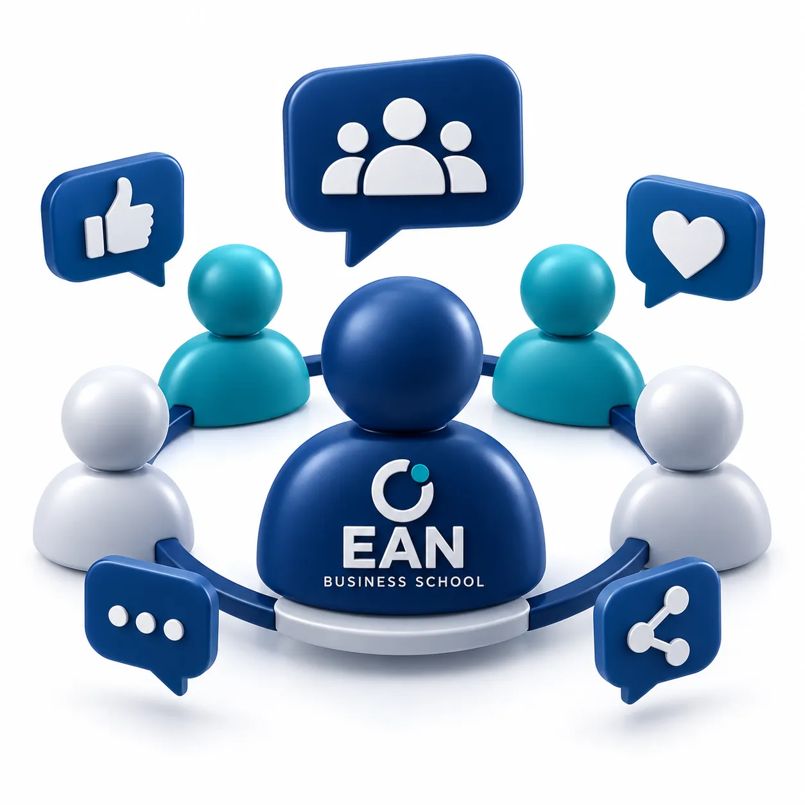
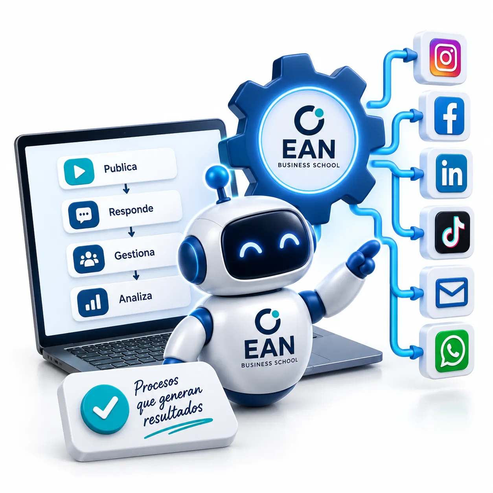
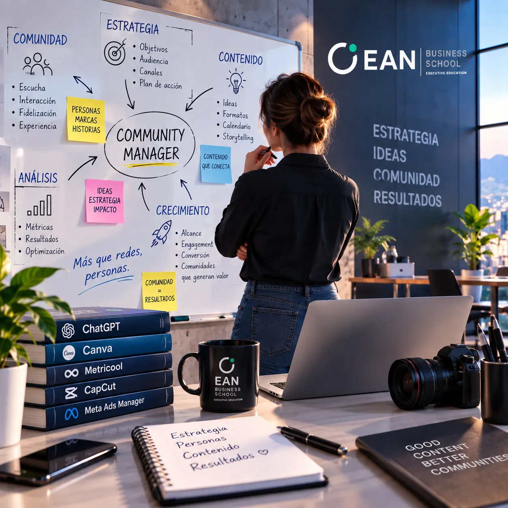
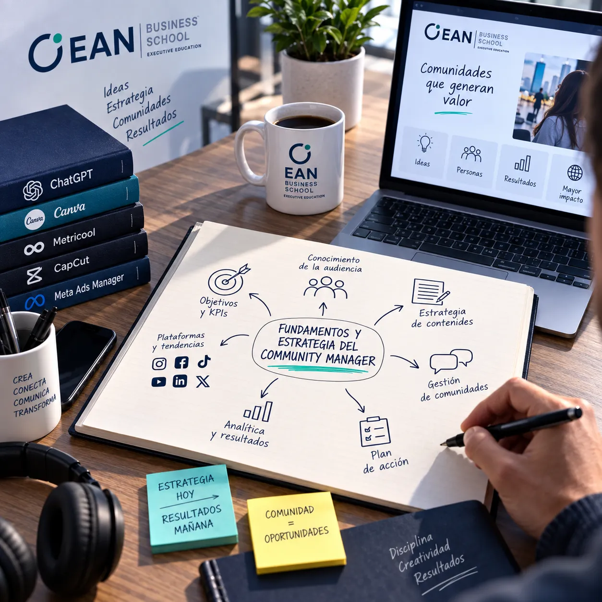
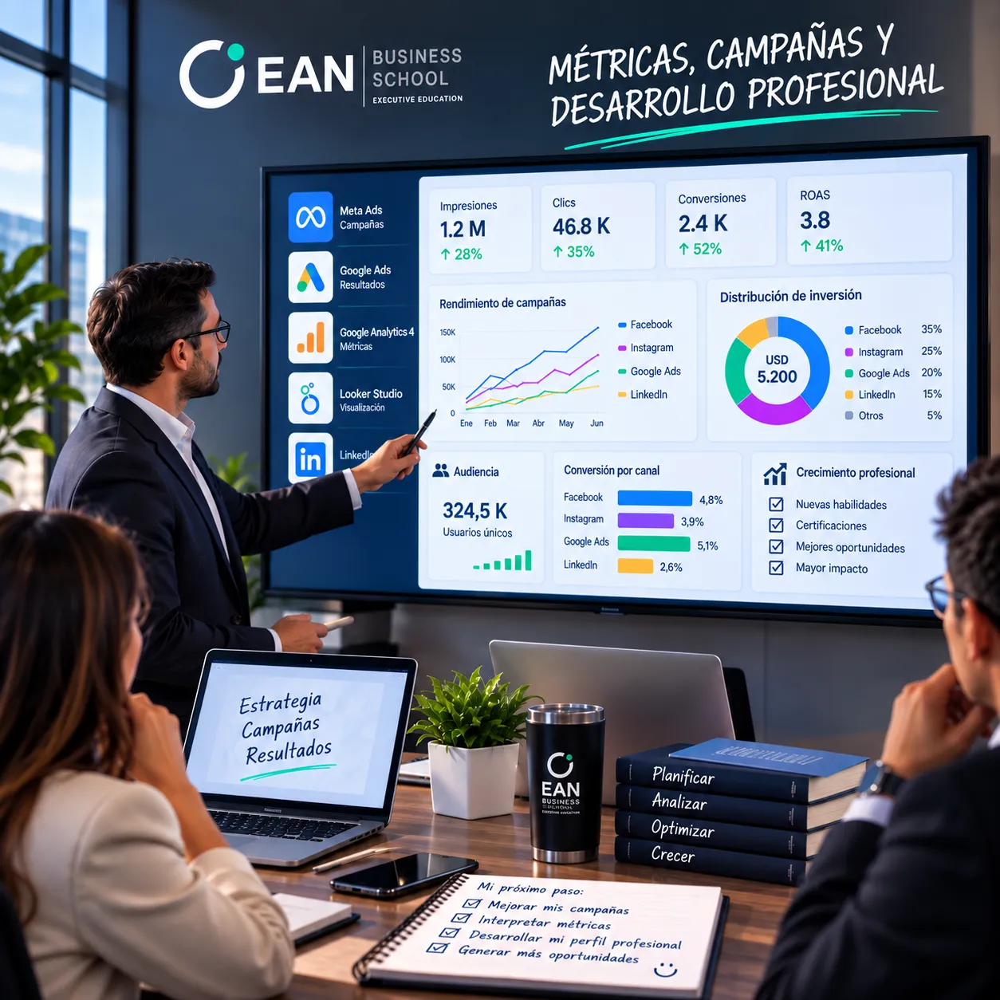
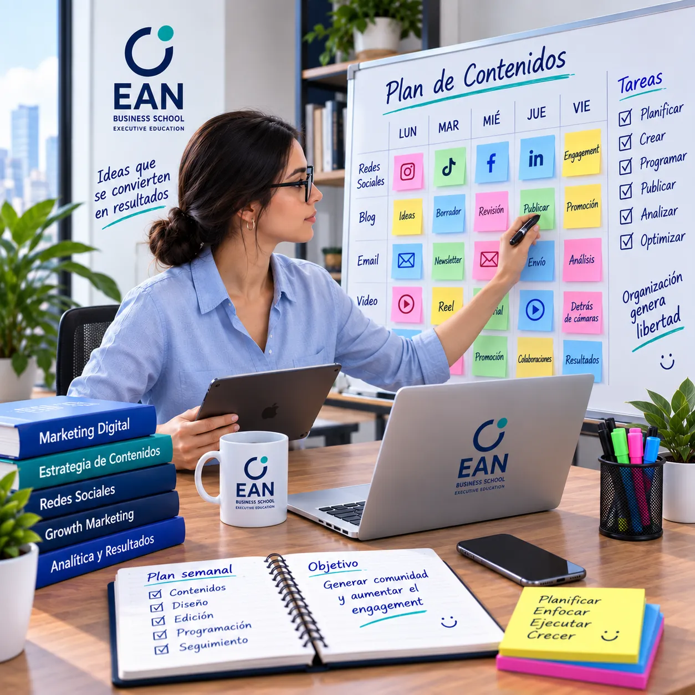
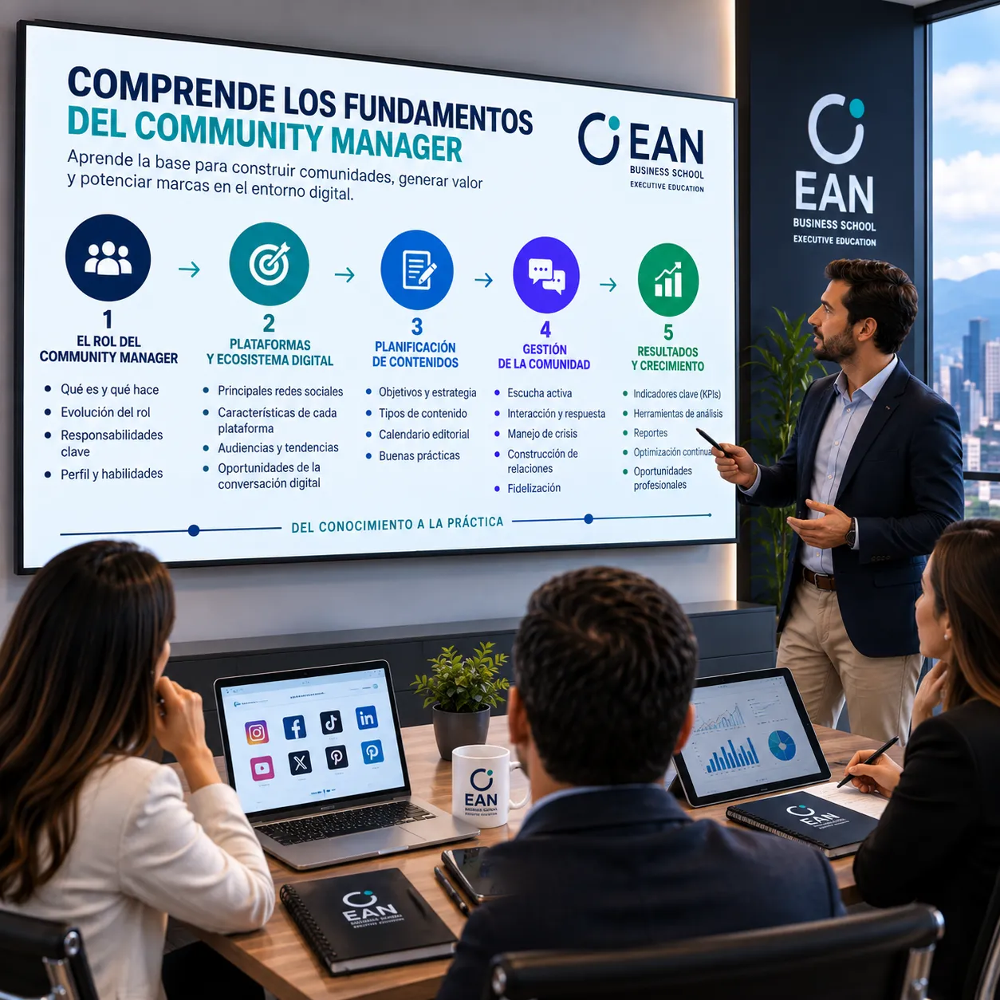
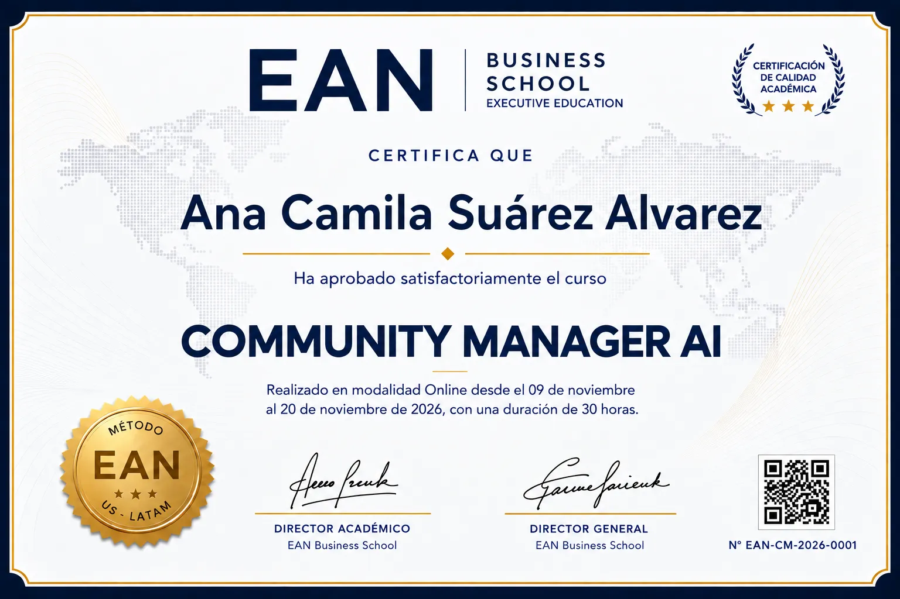
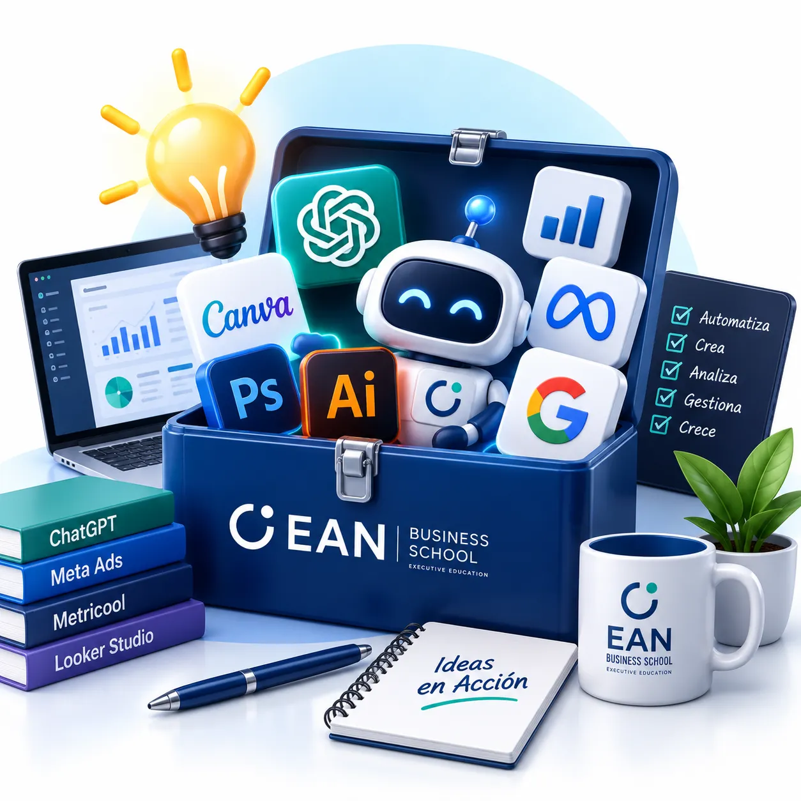

PLANIFICACIÓN
Planifica contenidos y actividades de Community Management a partir de objetivos, públicos, mensajes y pilares de contenido.
Aprende a crear contenidos, gestionar comunidades, automatizar tareas y medir resultados con Inteligencia Artificial para trabajar profesionalmente como Community Manager.
Más que aprender a publicar en redes sociales, desarrollarás las competencias para crear contenidos con Inteligencia Artificial, gestionar comunidades, automatizar tareas y medir resultados.
Planifica contenidos y actividades de Community Management a partir de objetivos, públicos, mensajes y pilares de contenido.
Crea ideas, copies, publicaciones, historias y videos utilizando Inteligencia Artificial como asistente creativo.

Gestiona comentarios, mensajes y conversaciones, aplica protocolos de atención y construye relaciones profesionales con la comunidad.

Automatiza tareas de atención y gestión utilizando WhatsApp Business, ManyChat, Make y herramientas de Inteligencia Artificial.
Un recorrido práctico para planificar, crear contenidos, gestionar comunidades, automatizar tareas y medir resultados.

Comprende el rol profesional del Community Manager y aprende a planificar la presencia digital de una marca, desde el diagnóstico y el brief hasta los objetivos, contenidos y organización del trabajo.
Aprende a utilizar la Inteligencia Artificial para investigar, idear y producir contenidos atractivos para diferentes plataformas digitales, desde el copy hasta el diseño y el video.

Aprende a gestionar comunidades digitales, atender profesionalmente a los usuarios, manejar situaciones difíciles y automatizar parte de la comunicación sin perder el componente humano.
Aprende a crear, gestionar y analizar campañas de publicidad digital en las principales plataformas, interpretando resultados y realizando optimizaciones para mejorar el rendimiento.

Desarrolla las competencias necesarias para planificar, crear, gestionar y optimizar comunidades digitales utilizando Inteligencia Artificial como herramienta de trabajo.

Diseña briefs, define pilares de contenido, organiza ideas y construye calendarios editoriales para gestionar la comunicación digital de una marca.
Competencia clave
Genera ideas, copies, captions, hooks, historias, carruseles y guiones utilizando IA para acelerar y mejorar el proceso creativo.
Competencia clave
Produce piezas visuales y videos cortos para redes sociales utilizando herramientas de IA y plataformas de creación de contenidos.
Competencia clave
Administra comentarios, mensajes y conversaciones, aplica protocolos de atención y responde profesionalmente ante diferentes situaciones de comunidad.
Competencia clave
Utiliza WhatsApp Business, chatbots y herramientas de automatización para organizar respuestas, atender consultas y mejorar la gestión diaria.
Competencia clave
Interpreta métricas básicas, prepara reportes, organiza tu portafolio y aprende a presentar servicios de Community Management profesionalmente.
Competencia clave
Nuestro método combina la rigurosidad académica con la aplicación inmediata. Aprendes conceptos y herramientas, los aplicas en desafíos reales y transformas ese aprendizaje en resultados y un portfolio profesional.

Conoce las funciones, responsabilidades y herramientas que necesita un Community Manager profesional para gestionar comunidades digitales.
Desarrolla contenidos, gestiona comunidades y utiliza herramientas de Inteligencia Artificial para trabajar de manera más eficiente.
Integra tus conocimientos en un proyecto práctico y construye un portafolio inicial para trabajar como Community Manager.
Este programa está dirigido a personas que quieren desarrollar competencias profesionales para gestionar comunidades digitales, crear contenidos y utilizar Inteligencia Artificial para trabajar de manera más eficiente.
Personas que desean iniciar una carrera profesional gestionando comunidades y contenidos digitales.
Profesionales que quieren incorporar Inteligencia Artificial, automatización y nuevas herramientas a su trabajo.
Personas que necesitan fortalecer sus competencias en creación de contenidos, gestión de comunidades y atención digital.
Personas que necesitan gestionar profesionalmente la presencia digital de su marca.
Personas que quieren ofrecer servicios de Community Management a empresas y marcas.
Personas que buscan desarrollar una nueva competencia profesional con aplicación inmediata.
Nuestro Faculty reúne profesionales con experiencia ejecutiva, consultoría y docencia, comprometidos con llevar el conocimiento a resultados reales para nuestros estudiantes.
MBA en Dirección Comercial • Consultor Internacional
Especialista en estrategia empresarial, desarrollo de negocios y marketing estratégico. Ha liderado proyectos de transformación comercial y consultoría para empresas de consumo, servicios e industria en América Latina.
MBA en Dirección Comercial • Consultor Internacional
Especialista en estrategia empresarial, desarrollo de negocios y marketing estratégico. Ha liderado proyectos de transformación comercial y consultoría para empresas de consumo, servicios e industria en América Latina.
Descubre cómo nuestros participantes han vivido el aprendizaje, aplicado sus conocimientos y desarrollado nuevas competencias para su crecimiento profesional.
Profesional y creador de contenidos
La Inteligencia Artificial está cambiando la forma de trabajar en comunicación y contenidos. Aprender a utilizarla de manera práctica permite desarrollar nuevas habilidades y trabajar con mayor eficiencia.
 alt="Networking entre participantes de EAN Business School"
alt="Networking entre participantes de EAN Business School"
 alt="Clase en vivo del programa Community Manager AI"
alt="Clase en vivo del programa Community Manager AI"
 alt="Experiencia y testimonios de participantes de EAN Business School"
alt="Experiencia y testimonios de participantes de EAN Business School"

Más que un certificado, desarrollarás habilidades prácticas, herramientas de Inteligencia Artificial y un portafolio inicial para trabajar como Community Manager.

Una base profesional para planificar contenidos y gestionar la presencia digital de una marca.

Herramientas de Inteligencia Artificial para crear contenidos, optimizar tareas y trabajar con mayor eficiencia.
Una selección de trabajos y entregables desarrollados durante el programa para demostrar tus competencias.
Ejercicios y proyectos prácticos basados en situaciones reales del trabajo de un Community Manager.
30 horas de formación práctica + herramientas de IA + proyectos aplicados + portafolio profesional + certificación ejecutiva.
✓ + IVA
20 horas en vivo + 10 horas de aprendizaje autónomo guiado
Acceso a la plataforma Moodle EAN Business School
Clases en vivo a través de Zoom
Material didáctico y recursos descargables
Herramientas de Inteligencia Artificial aplicadas al trabajo
Desafíos y proyectos prácticos
Networking profesional
Certificación Ejecutiva EAN Business School
Portafolio inicial de Community Manager